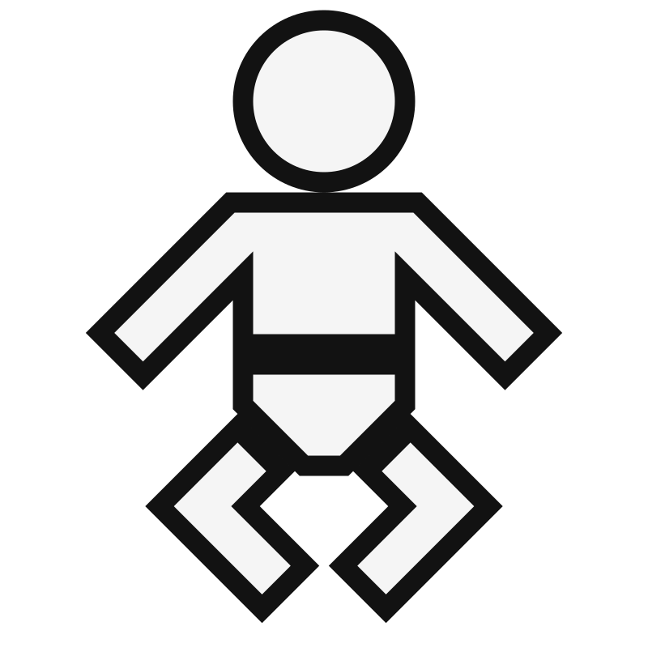
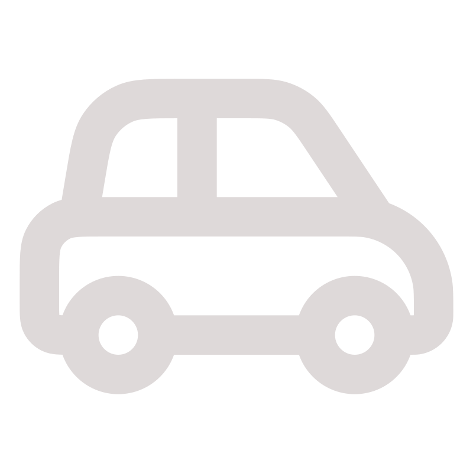
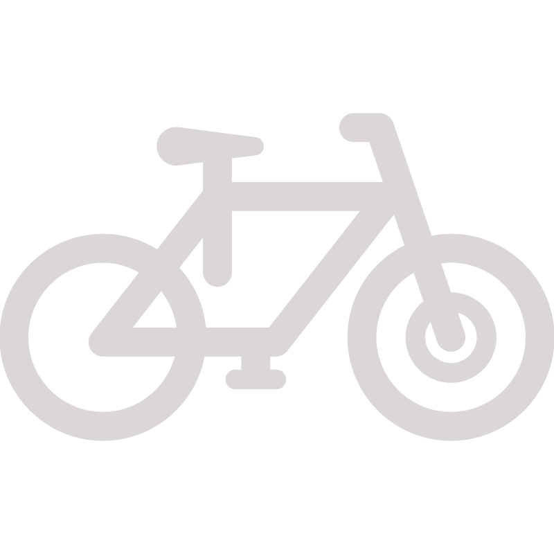
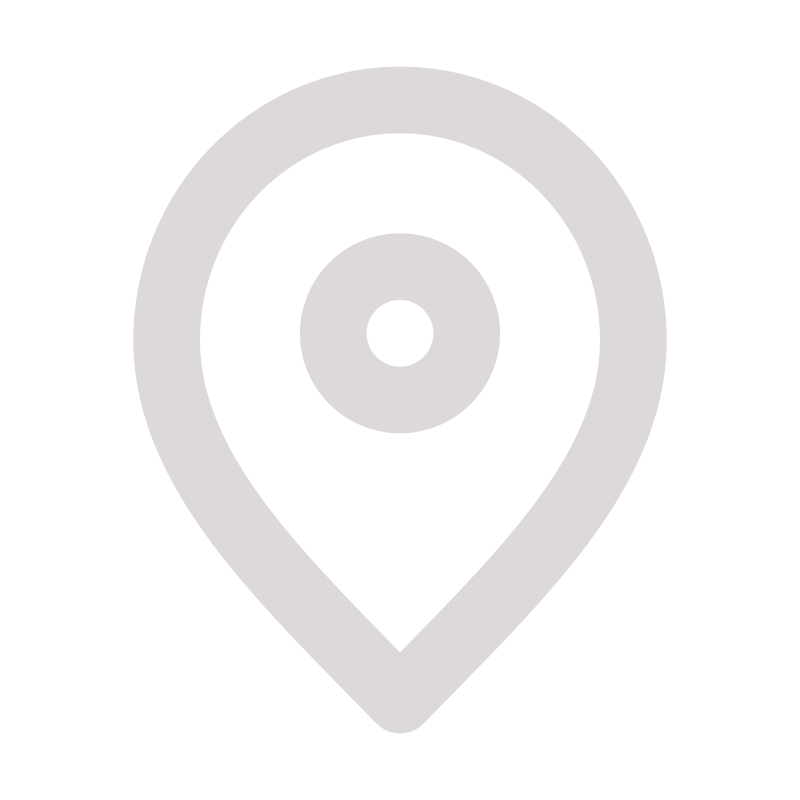
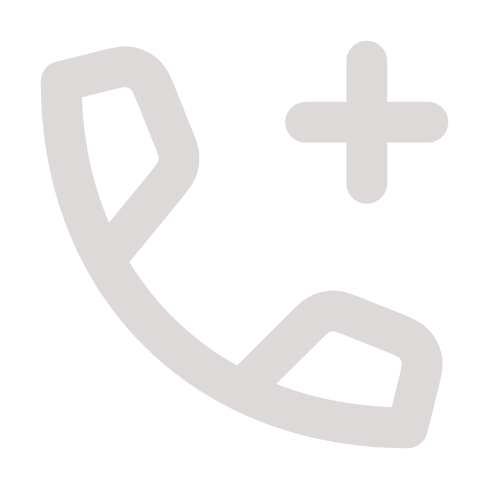

- djbk62@gmail.com
-
.svg) 62100 calais
62100 calais
- Né le 31/05/1979
-
 Francais
Francais
-  Télétravaille ou Présentiel
- Permis B
- Mobile en velo
- Calais et environ
- 0766800671
Langues
-
Anglais
- D'un niveau moyen
Atouts
-
Sociable
- à l'écoute avec une forte
empathie
-
Modulable
-
Une grande adaptabilité
grace a mes nombreuses experience
divers et variées
Réseaux sociaux


Centre d'interêt
- Randonné
- Informatique
- Lire
Yohann vanherzecke
#Devellopeur_web
Formation complémentaire
-
de mai 2021 a decembre 2021 AFPA de
Calais
Niveau Bac+2
Dévellopeur Full-Stack
Informatique
-
Création d'une page web pour la location de véhicules:
Language: Ajax ,Php,Css -
Création d'une page géoapi avec les bases de données
gouvernemental
code postaux , nombre d habitant géolcalisation personel (API REST):
Language: HTML, Javascipt, Css, Sql. -
Création d'une page de recherche de film utilisant ombd:
Language:HTML, Javascipt, Css. -
Création du projet fil rouge ,une application de gestion des
stocks
avec gestion des roles utilisateurs (API REST):
Language:HTML,PHP, Javascript, Css, Sql. -
Participation a la création d'un réseaux sociaux orienté
cinema pendant mon incubateur (API REST).
Language: HTML, Css, Javascipt, Sql.
framework :react ,vite.
librairies:Express, Socket.io, Tailwind, Axios. -
Création d'une
extension chrome Pour
analyser les scripts chargé par une page pendant votre
navigation internet
l'analyse est assisté par IA avec un rapport envoyer par email:
Language: HTML, Javascript, Css.
framework: Vite.
librairies :Express, Fs, OpenAI, nodemailer. - Création projet perso : voir github @bannik62
-
Outils maitrisé:
Vscode, Figma, PhpMyAdmin, linux, Android, Terminal (bash,dos) .
Languages :
HTML,CSS,Javascript,jQuery,Ajax,Php,sql
Expériences professionel
2000
2008/2016
2016/2019
2019/2020
2022/2022
2023/2024
-
Charcutier traiteur :
De mai 2022 a décembre 2006 Charcuterie maffrand Calais
Rigueur et dexterité des métiers de la bouche
-
Interim ouvrier polyvalent
de janvier 2008 à javier 2016 Critt,Adecco,Manpower:de nombreuse mission en tant que échafaudeur,mécanicien, calorifugeur, conciergerie
btp,securité incendie,chaudronnerie,vmc,..
-
Fabrication de cable optique :
De février 2016 à janvier 2019 Alcatel network Calais
Soudure et colorisation de fibre optique et fabrication de la section tube
-
logistique :
De janvier 2019 à janvier 2020 IDA Alcatel Calais
logistique et transport de câble marin
-
Formation developpeur web FullStack :
AFPA Calais
formation:HTML,CSS,JavaScript,
Ajax,PHP,SQL
-
Incubateur :
De janvier 2023 à mai 2023 1formation1job Lille
Montée en compétence React,Tailwind,Redux,mise en route de projets et suivis.